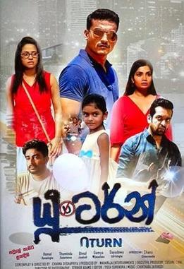
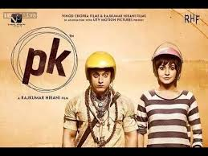

My favourite movies
I love to watch movies. There are always some things that you like more than the other. Movies are very simple and full of emotions. I can watch that movie over and over again. I will never get bored with movies.
Uturn
The plot revolves around the death of motorists who break a traffic rule at a particular
flyover and subsequent pinning down of the culprit by an intern journalist and police inspector duo.
You can find the movie link from here Uturn
Sarigama
Maria (Pooja Umashankar), a young and beautiful music loving girl enters a convent with the intention of becoming a Catholic nun.
Her playful behavior and strong desire to make music create difficulties with the convent's administration.
She is sent away to become a governess to the seven children of a widowed ex-navy captain (Ashan Dias).
Maria's playful friendliness towards the children and the very strict captain attracts the love of both the children and the captain, changing all of their lives.
You can find the movie link from here Sarigama
Thare Samipar

Ishaan is criticised by his parents for his poor academic performance and is sent away to a boarding school.
Ram, an art teacher, however, realises he has dyslexia and helps him uncover his potential.
You can find the movie link from here Thare Samipar
PK
An innocent alien lands on Earth but loses his communication device. He meets Jaggu, a heartbroken reporter, and tries to find his device.
With time, he raises many thought-provoking questions.
You can find the movie link from here PK